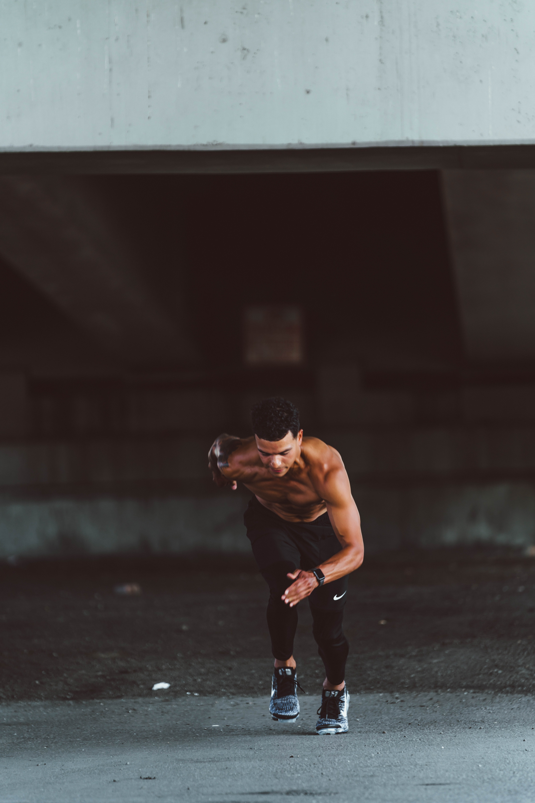
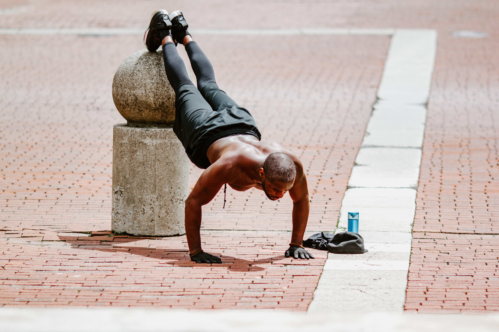

Workout Meeting
Members who are new to excercing may only know a few workout routines or get discouraged if they dont see result. The best way is to start slowly and gradually hit your goal.

TRAINING-PERFORMANCE
Endurance running has become an immensely popular sporting .activity, with millions of recreational runners around the world. There is no consensus on the best practice for recreational to reach individual objectives.

TRAINING-STRENGTH
Strength training or resistance training involves the performance of physical exercises which are designed to improve strength and endurance. It is often associated with the use of weights but can take a variety of different forms.